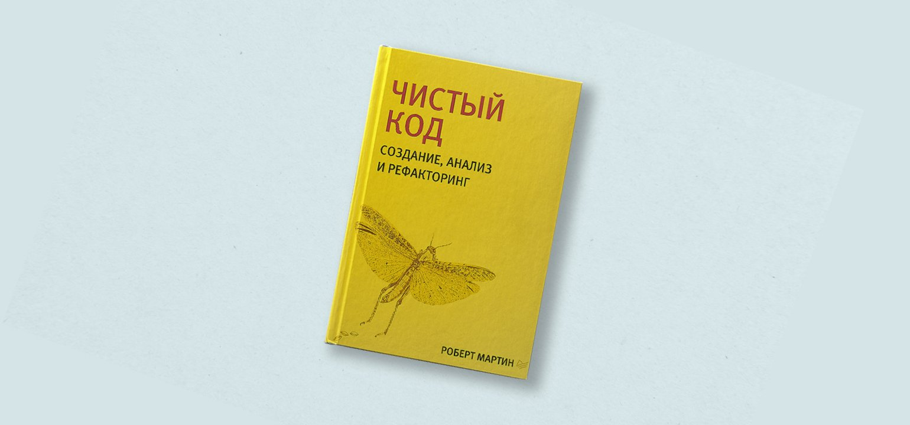
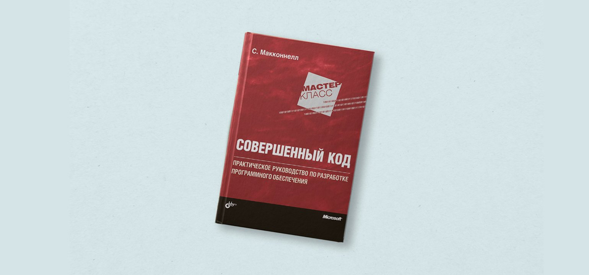
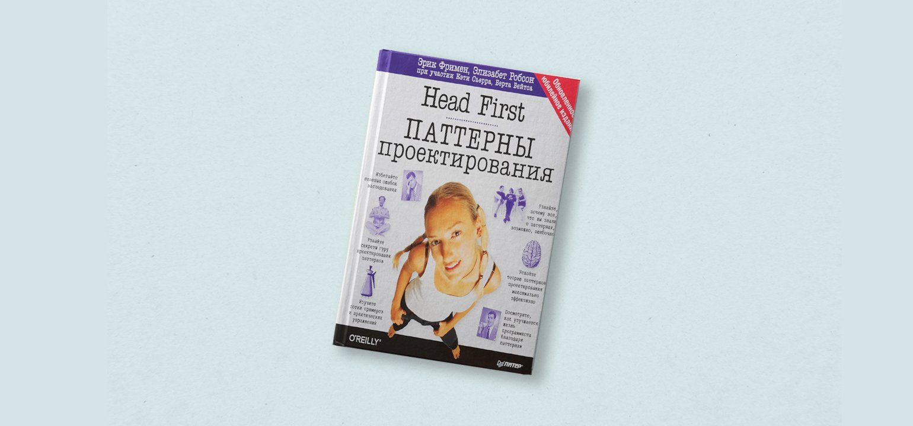

Мы выбрали книги, которые не привязаны к конкретным языкам программирования, технологиям или инструментам. Они рассказывают об алгоритмах и структурах данных, шаблонах проектирования и рефакторинге, учат мыслить как программист, готовят к собеседованию и помогают строить успешную карьеру.
Сложность книжек мы оценили смайликами от одного 🤯 (понятно и новичку) до 🤯 🤯 🤯 🤯 🤯 (без программистского опыта или спецподготовки будет непросто).
Наш шорт-лист:
1. «Программист-прагматик. Ваш путь к мастерству» (2-е, юбилейное издание к 20-летию выхода книги)
Дэвид Томас, Эндрю Хант
Перевод с английского — И. В. Берштейн
Издательство «Вильямс» , 2020 год, 368 с.
Оригинальное название: The Pragmatic Programmer: Your Journey To Mastery, 20th Anniversary Edition (2nd Edition) by David Thomas & Andrew Hunt
Зачем читать: чтобы получить общее представление о работе программистов.
Сложность: 🤯 🤯
Кажется, в этой книге есть всё, что пригодится программисту: от того, как стать ответственным, до анализа ошибок в алгоритмах и шифрования данных.
Если разбирать все эти темы от и до, получился бы неподъёмный труд на 100500 томов, а не 300 страниц «Программиста-прагматика». Так что книга даёт лишь общее представление — как карта без детализации.
Отзывы:
Книга содержит просто огромное количество полезных и правильных советов программистам. Вот только она будет более интересна начинающим, поскольку если вы имеете опыт, более 3-4 лет, то скорее всего, что вы уже собственными шишками узнали и поняли 90 процентов информации написанной в ней.
Источник: livelib.ru.
Книга содержит примеры кода и ряд упражнений, что делает её полезной и в практическом плане. Если говорить о стиле, то она хорошо организована, авторы чётко понимают взаимосвязь между её частями, это отражено в её структуре и в каждой главе.
Источник: livelib.ru.
Прекрасный язык, легкий стиль изложения, «просто о серьезном», много интересных наблюдений, причем о всем известных, казалось бы, вещах.
Источник: livelib.ru.
2. «Чистый код: создание, анализ и рефакторинг» (Библиотека программиста)
Роберт Мартин
Перевод с английского — Е. А. Матвеев
Издательство «Питер», 2021 год, 464 с.
Оригинальное название: Design Patterns: Elements of Reusable Object-Oriented Software by Erich Gamma, Ralph Johnson, John Vlissides, Richard Helm
Зачем читать: чтобы узнать про шаблоны программирования из первоисточника.
Сложность: 🤯 🤯 🤯 🤯 🤯
Начинающим программистам иногда кажется, что раз программа заработала, то и ладно. Ни к чему с ней дальше возиться: незачем тщательно продумывать структуру классов, обрабатывать все граничные условия и уж тем более заботиться о говорящих именах переменных, полезных комментариях и других «мелочах».
Отзывы:
Легкий и образный стиль изложения понравился, читать приятно и интересно. Имеется анализ и обобщение практического опыта – это может быть полезно новичкам.
Источник: habr.com.
Все описанные в книге мысли по делу (есть конечно некоторые словоблудные места, но это даже красит повествование). Путь набора опыта, трепетный просмотр книжных полок по ИТ-тематике – всё то, что я проходил и прохожу сейчас. Поэтому буду эту книгу рекомендовать всем тем, кто хочет "зайти в айти". Автор молодец!
сточник: habr.com.
3. «Совершенный код. Мастер-класс»
Стив Макконнелл
Перевод с английского — В. Г. Вшивцев
Издательство «БХВ», 2017 год, 896 с
Оригинальное название: Code Complete by Steve McConnell
Зачем читать: чтобы узнать, как довести любую программу до совершенства. Ну или хотя бы попытаться :)
Сложность: 🤯 🤯 🤯
Грамотное конструирование — это секрет успеха. Вот основная идея автора книги. Причём в конструирование входит и планирование, и кодирование, и тестирование готовой программы.
Из книги вы узнаете:
- - какие бывают методики проектирования;
- - как повысить качество методов в коде;v
- - как отлаживать код и как его улучшать (рефакторить);
- - и даже зачем программисту любопытство.
Отзывы:
Книга в целом интересная, хотя воды немало. Запомнилась глава про собеседования. Рекомендую к прочтению. Из недостатков можно отметить бледный мелкий шрифт, читать можно только при хорошем освещении.
Источник: labirint.ru.
Читается легко, спокойная форма повествования, хотя нового для себя ничего не открыла. Данная книга не содержит никаких технических сведений, так, разговор о жизни
Источник: labirint.ru.
В книге имеются интервью с довольно-таки разношерстной публикой. Некоторые из них ужасающе, невыносимо занудные и однобокие, другие читаются на одном дыхании. В любом случае, большая часть участников интервью заслуживает внимания и уважения.
Источник: labirint.ru.
4. «Паттерны объектно-ориентированного проектирования»
Эрих Гамма, Ричард Хелм, Ральф Джонсон, Джон Влиссидес
Перевод с английского — А. Слинкин
Издательство «Питер», 2021 год, 448 с.
Оригинальное название: Code Complete by Steve McConnell
Зачем читать: чтобы узнать, как довести любую программу до совершенства. Ну или хотя бы попытаться :)
Сложность: 🤯 🤯 🤯 🤯 🤯
Четвёрка авторов, она же «Банда четырёх», среди программистов известна не меньше, чем «Битлз» во всём мире. И знамениты они как раз тем, что первыми детально описали 23 основных шаблона проектирования — показали, как организовывать взаимодействие классов и объектов, чтобы решать типичные задачи программирования.
Многие считают, что эта книга устарела, — первое издание вышло 25 лет назад, и за это время было написано много других книг о шаблонах. Однако принципы классификации, да и сами шаблоны, до сих пор актуальны.
Отзывы:
Если вы из тех людей, которым нужно понять, откуда что-то взялось, чтобы по-настоящему во всем разобраться – это книга для вас. Она не только о коде и о том как кодить», но и о том, что такое код и откуда он взялся.
Источник: Amazon.com.
Это гениальное описание эпохи. Как развивалось программирование в целом, какие оно прошло стадии и переходы, и как мы в итоге пришли к теперешнему корпоративному мышлению и производству ПО. Биографии знаменитых людей, их достижения и переворот в Computer Science.
Источник: habr.com.
Хорошо упорядоченный сбор самых полезных и интересных методик и советов по управлению временем. Книга по повышению личной эффективности. Отлично подходит для того, кто только начал заниматься собой и хочет чего-то добиться в жизни.
Источник: litres.ru.
5. «Head First. Паттерны проектирования» (обновлённое юбилейное издание)
Эрик Фримен, Элизабет Робсон, Кэти Сьерра, Берт Бейтс
Перевод с английского — Е. А. Матвеев
Издательство «Питер» 2021 год, 656 с.
Оригинальное название: Head First Design Patterns: A Brain-Friendly Guide by Eric Freeman & Elisabeth Robson / Bert Bates / Kathy Sierra
Зачем читать: ччтобы перестать ненавидеть шаблоны и начать, наконец, их применять на практике :)
Сложность: 🤯 🤯
Тот самый случай, когда проще — не значит хуже. В этой книге из серии Head First знаменитого издательства O’Reilly, похоже, достигнут идеальный компромисс между сложностью объясняемых концепций и простотой подачи материала.
Создать программу для работы с данными метеостанции или написать код для расчёта стоимости напитка в кофейне Starbuzz — на таких игровых задачах авторы объясняют, как применять основные паттерны проектирования, и учат достраивать архитектуру грамотно — соблюдая все важные принципы. Например, открывать классы для расширения, но закрывать их для изменений.
Отзывы:
Книга будет полезна для чтения студентам технических вузов, а также всем кто интересуется программированием.
Источник: ozon.ru.
Очень неплохая книга про подход к процессу разработки. Можно почитать даже тем, кто не связан с ИТ – некоторые рекомендации универсальны.
Источник: ozon.ru.
В книге имеются интервью с довольно-таки разношерстной публикой. Некоторые из них ужасающе, невыносимо занудные и однобокие, другие читаются на одном дыхании. В любом случае, большая часть участников интервью заслуживает внимания и уважения.
Источник: litres.ru.
6. «Шаблоны корпоративных приложений» (Signature Series)
Мартин Фаулер
Перевод с английского — Е. А. Матвеев
Издательство «Питер» 2021 год, 656 с.
Оригинальное название: Head First Design Patterns: A Brain-Friendly Guide by Eric Freeman & Elisabeth Robson / Bert Bates / Kathy Sierra
Зачем читать: ччтобы перестать ненавидеть шаблоны и начать, наконец, их применять на практике :)
Сложность: 🤯 🤯
Тот самый случай, когда проще — не значит хуже. В этой книге из серии Head First знаменитого издательства O’Reilly, похоже, достигнут идеальный компромисс между сложностью объясняемых концепций и простотой подачи материала.
Создать программу для работы с данными метеостанции или написать код для расчёта стоимости напитка в кофейне Starbuzz — на таких игровых задачах авторы объясняют, как применять основные паттерны проектирования, и учат достраивать архитектуру грамотно — соблюдая все важные принципы. Например, открывать классы для расширения, но закрывать их для изменений.
Отзывы:
Книга будет полезна для чтения студентам технических вузов, а также всем кто интересуется программированием.
Источник: ozon.ru.
Очень неплохая книга про подход к процессу разработки. Можно почитать даже тем, кто не связан с ИТ – некоторые рекомендации универсальны.
Источник: ozon.ru.
В книге имеются интервью с довольно-таки разношерстной публикой. Некоторые из них ужасающе, невыносимо занудные и однобокие, другие читаются на одном дыхании. В любом случае, большая часть участников интервью заслуживает внимания и уважения.
Источник: litres.ru.